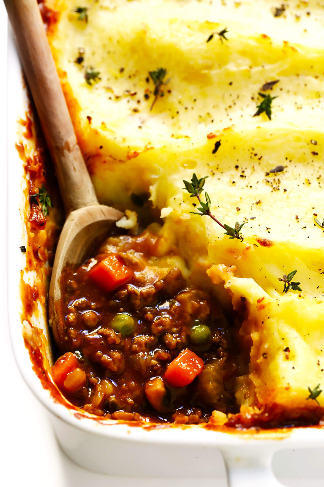

Shepard's Pie

Ingredients:
- Ground beef 1 lbs
- Mashable potatoes 8 oz
- Grated Cheese (Permasan, chedder, whatever you want, just make sure it melts)
- Carrots 6 oz
- Celery 2 stalks
- 1 small yellow onion
- Garlic powder 1 tbsp
- Thyme 1 tbsp, but go crazy if you dare
- Tomato paste 3 oz
- Butter 2 oz
- Beef Broth
- Start boiling water, then immerse the cut and skinned potatoes for 15-20 minutes, then drain, add 2 oz of butter, and mash away. Add Thyme for the, cottage vibes.
- Cut carrots, onion, and celery. Saute carrots for 2 minutes, then add the other veggies.
- Salt and pepper the veggies as desired and after 7 minutes (in heaven), mix in garlic powder and thyme.
- Add the ground beef to the pan and thoroughly break apart/mix around. Add broth if necessary.
- Add Tomato sauce after beef is cooked through and turn off the heat after 3 minutes.
- Layer pan mixture at the bottom of a baking dish, then add mashed potatoes on top.
- Cover the top layer of mashed potatoes with grated cheese, then broil on high for 2 minutes
- Enjoy!
- Lasts in the fridge for about 4 days